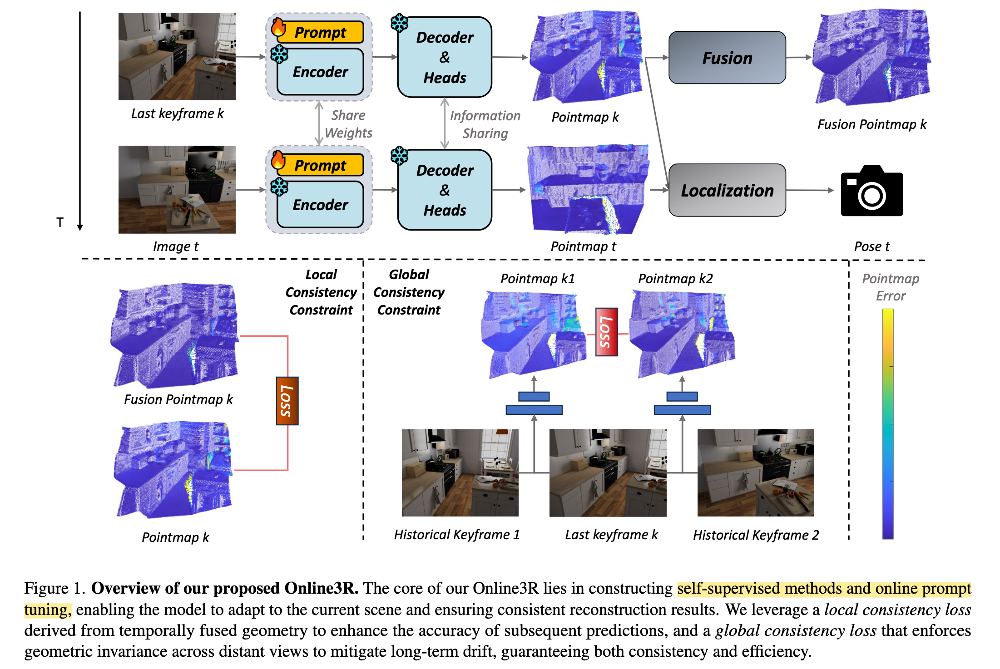

把 mast3r-slam 的主干冻结，只在测试时在线更新一组 vision prompt，让基础模型来逐步吸收当前场景的几何先验，从而缓解 sequential reconstruction 里的几何不一致与漂移。
让 frozen geometry foundation model 在新场景中通过 online learning 适配，并用 local/global consistency 在无 GT 条件下更新 prompts。

(1) 跑 MASt3R-SLAM 前端 当前帧和最近的 keyframe 输入 frozen MASt3R，预测当前帧/关键帧 pointmap，并估计相对位姿；MASt3R-SLAM 原本会对 keyframe pointmap 做 confidence-weighted fusion。Online3R 直接用这个 fused pointmap，因为它比单次网络预测更稳定。(2) local consistency 更新 prompt。 新 keyframe 出现时，把上一 keyframe 已经融合好的 pointmap 当作 pseudo-GT，再让网络直接预测一次这个 keyframe 的 pointmap，用二者的 L1 距离更新 prompt。
把多帧融合后的局部几何知识蒸馏回 MASt3R 的 prompt 条件中。
(3) global consistency 防止局部过拟合。 随机采两个历史 keyframes，分别作为 reference 去预测同一个当前 keyframe 的几何；同一个物理 keyframe 的预测应该一致，所以对两个预测 pointmap 加 L1 约束。
同一帧不能因为 reference 不同而变形 -- 处理 long-term consistency 的关键。